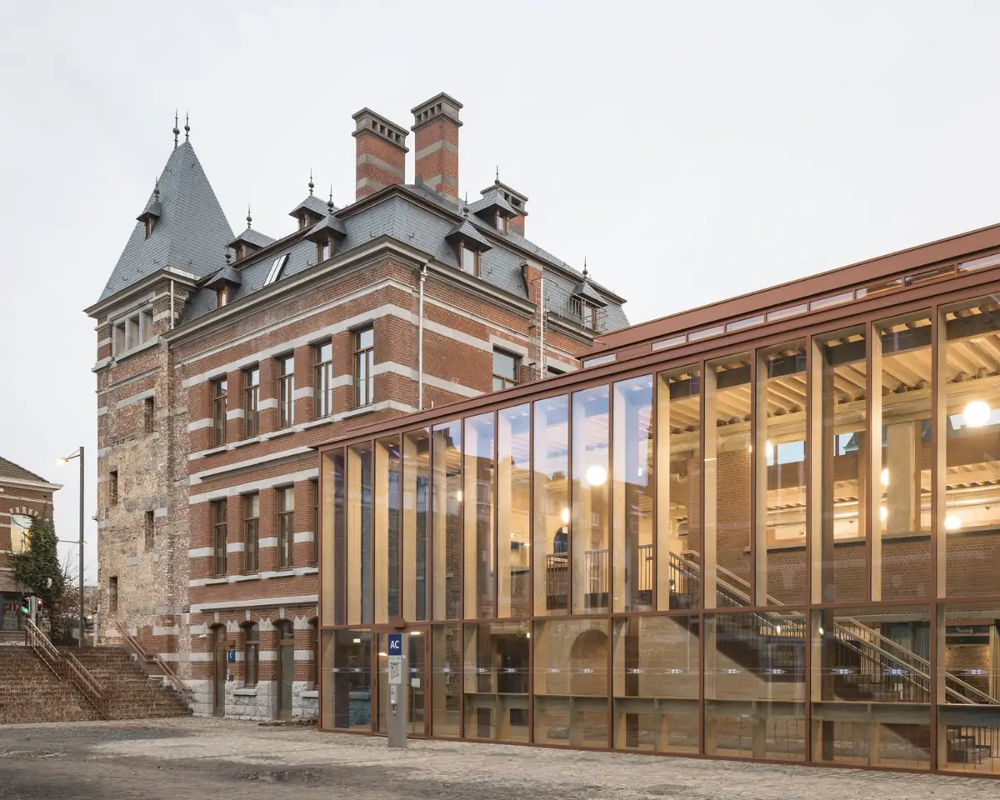
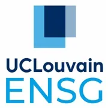
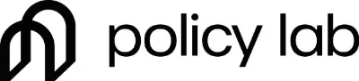
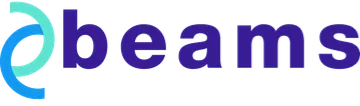
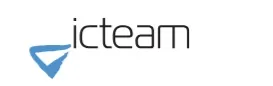

Cross-sectorale dialoog voor digitale toekomsten
17–18 maart 2027 | USquare, Brussel
DIGITAL X SUSTAIN is een tweedaags, hands-on evenement over de duurzaamheid van onze digitale en fysieke wereld.
Hoewel de digitale transitie wordt gezien als een motor voor groene transities, is er ook kritiek op dat perspectief. Onderzoekers en maatschappelijke organisaties wijzen op mogelijke discrepanties tussen digitale doelen en duurzaamheidsdoelen. Ze stellen daarbij vragen over publieke participatie, sociale gevolgen en de milieu-impact van digitalisering: elektriciteitsverbruik, waterverbruik, winning van zeldzame materialen en e-waste, thema’s die publiek debat en beleidshervorming vragen.
Terwijl adoptie en kritiek naast elkaar bestaan, ontmoeten voor- en tegenstanders elkaar zelden in dialoog. Dat beperkt de creatieve innovaties die uit constructieve meningsverschillen kunnen ontstaan. We willen verschillende perspectieven samenbrengen door belanghebbenden uit uiteenlopende sectoren uit te nodigen voor dialoog.
We nodigen professionals uit de publieke, private en verenigingssector uit, evenals onderzoekers, kunstenaars, ontwerpers en bewoners die met hun projecten duurzaamheidsvraagstukken rond het internet en digitale technologie ondersteunen of bevragen, om hun werk en ideeën te presenteren in zowel traditionele als innovatieve vormen.
U kunt uw werk in verschillende formats indienen. We moedigen naast traditionele ook diverse vormen van expressie en dialoog aan.
U wordt gevraagd een abstract van 500 woorden in te dienen waarin u uw bijdrage en uw presentatieaanpak toelicht. Inzendingen worden beoordeeld op relevantie voor de conferentiethema’s en op hun bijdrage aan een divers, publiek toegankelijk programma.
Aanvaarde abstracts worden opgenomen in het conferentieprogramma; publicatiemogelijkheden worden dichter bij het evenement bevestigd. Dit is een evenement op locatie: auteurs presenteren in persoon.
Taal
Engels, Frans en Nederlands
Voor wie?
Publieke sector, industrie, onderzoekers, kunstenaars, maatschappelijke organisaties
Deel een project, een tool, een overheidsbeleid… of zelfs een mislukking met waardevolle lessen rond een van de drie hoofdthema’s van digitale duurzaamheid:
Digitale infrastructuur en netwerken: Antennes, kabels en mobiele netwerken verbruiken energie, materialen en publieke ruimte, en zijn vaak ontworpen voor piekbelasting. Heb je gewerkt aan het energieverbruik van netwerken, het delen van infrastructuur, het uitfaseren van oude netwerken of verouderende apparatuur?
Green IT en IT for Green: Heb je de milieu-impact van een digitale dienst gemeten, of nagegaan of een “smart” project de beloofde besparingen echt heeft opgeleverd?
Circulariteit en verantwoord aankopen: Heb je een bestek opgesteld dat gereviseerde of herstelbare apparatuur vereist, of beheer je een reparatie-initiatief of neem je eraan deel?
Digitale soberheid: Heb je de hoeveelheid data die je aanmaakt, gebruikt of opslaat verminderd, of de levensduur van je apparaten verlengd? Ontwikkel of werk je aan digitale diensten en apparaten die met minder kunnen functioneren?
Alternatieve AI: Heb je een klein AI-model lokaal gedraaid, of besloten helemaal geen AI te gebruiken? Ontwikkel of verken je alternatieven voor mainstream AI?
Duurzaamheidsbeleid voor de digitale en telecomsector: Werk je aan duurzaamheidsregels, -normen, -vereisten of -doelstellingen voor de digitale en telecomsector? Wat gebeurt er wanneer ze in de praktijk worden gebracht?
Veerkracht, robuustheid en soevereiniteit: Hoe kunnen digitale systemen blijven functioneren bij energietekorten, klimaatschokken of verstoringen in de toelevering? Wat betekent digitale soevereiniteit voor jou in de praktijk?
Netneutraliteit en eerlijkheid: Werk je aan de manier waarop regelgeving en protocollen bepalen welk verkeer voorrang krijgt en met welke snelheid?
Gemeenschappen, participatie en de commons: Maak je deel uit van een gemeenschapsnetwerk of een digitale coöperatie, of werk je met gemeenschappen om technische democratie mogelijk te maken?
Wordt later aangekondigd…

Locatie: USquare, Brussel
Kroonlaan 227, 1050 Brussel
op 5 minuten wandelen van station Brussel-Etterbeek en op 30 minuten van station Brussel-Centraal met bus 95 of 71
DIGITAL X SUSTAIN wordt georganiseerd door het onderzoeksconsortium MImPG, gefinancierd door Innoviris.
Dit consortium, gevormd door ULB, UCLouvain en ISIT, onderzoekt de mogelijkheden van een post-groei metropolitaan internet voor het Brussels Hoofdstedelijk Gewest.
Meer weten over het MImPG-project ? Bezoek onze website.
Voorstellen zijn welkom tot 20 december 2026. Uiterlijk 15 januari 2027 laten we u weten of uw voorstel is aanvaard.



